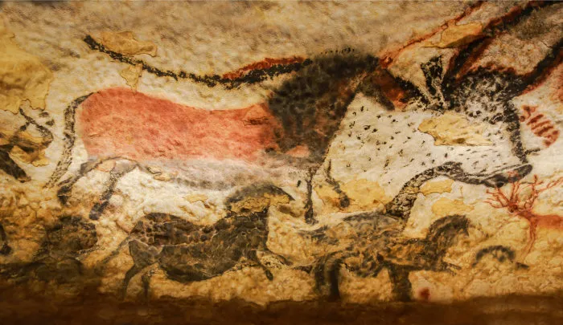
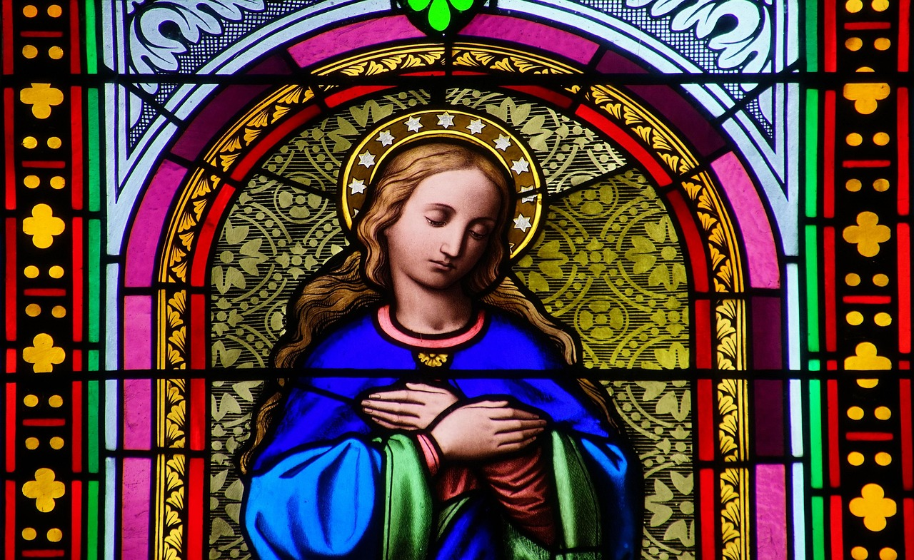
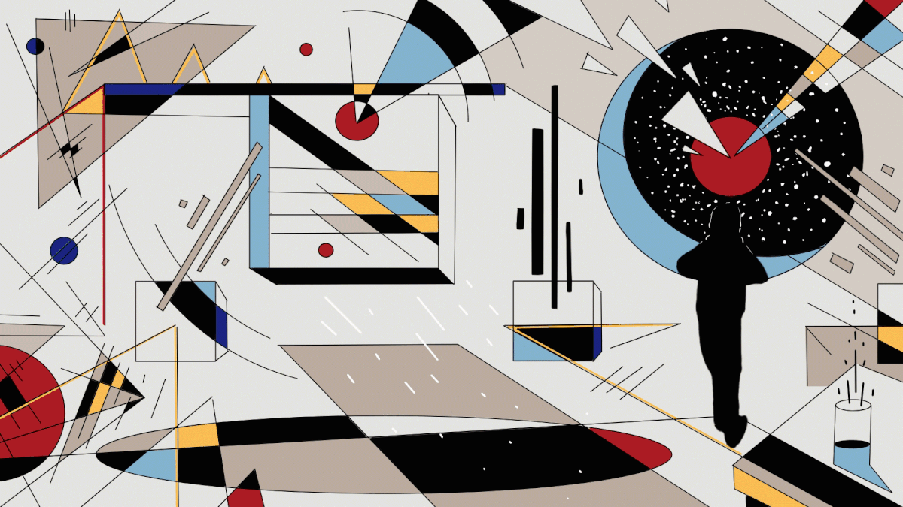
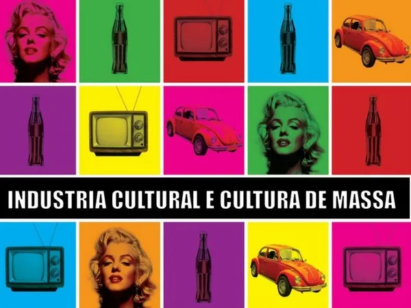
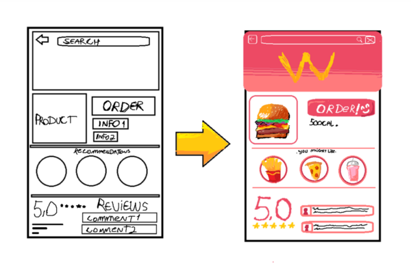

🪨 Origens e Pré-História (antes de 500 a.C.)
O historiador Philip Meggs, no livro The History of Graphic Design, afirma que desde a pré história o homem busca conceituar visualmente ideias, armazenar conhecimento gráfico a fim de transmitir informações. Com o passar do tempo, essa necessidade de comunicação se aprimorou, se transformando e iniciando as linguagens escritas, que são símbolos visuais. Os desenhos passaram a se tornar formas que se complementam para formar uma ideia. Posteriormente, esses símbolos foram sendo adaptados para nossos alfabetos e profissões como escrivães, copistas, escritores e etc; começaram a surgir.
Informações adicionais:
📜 Antiguidade Clássica (500 a.C. - 500 d.C.)
Por ter sido influenciado por várias culturas e períodos históricos, a evolução que se deu ao design na época da antiguidade foi um processo muito complexo. - Grécia Antiga: Os gregos aperfeiçoaram o alfabeto fenício, criando caracteres mais harmoniosos e legíveis. Introduziram a escrita boustrophedon (alternada e direção) e depois a escrita da esquerda para a direita. Vasos e moedas gregas apresentavam ilustrações narrativas e tipografia primitiva. - Roma Antiga: Os romanos herdaram e refinaram o alfabeto grego, criando a escrita monumental, como a usada na Coluna de Trajano(113 d.C.), um marco da tipografia clássica. Desenvolveram também o codex(Antecessor do livro moderno), substituindo gradualmente os rolos de papiro. - China: A invenção do papel por Cai Lun(105 d.C.) revolucionou o suporte para a escrita e ilustração, permitindo avanços na caligrafia e na reprodução de textos. - Declínio do Império Romano e início da Idade Média: Com a queda de Roma, os mosteiros cristãos preservaram a tradição gráfica, copiando manuscritos em scriptoria e desenvolvendo a arte dos iluminados(como o Codex Vaticanus), que fundiam texto e ornamentação Basicamente, nesse período o design gráfico evoluiu da escrita prática para uma expressão artística e funcional, lançando bases para a comunicação visual nos séculos seguintes.
Informações adicionais:
✝️ Idade Média (500 - 1400)
Nesse período, o design gráfico foi marcado pela arte religiosa e pela produção de manuscritos iluminados, criados em mosteiros. Esses livros, como os Evangeliários e a Bíblia de Gutenberg, combinavam caligrafia refinada com (como a escrita carolíngia) com ilustrações ornamentadas em ouro e cores vibrantes. A Igreja Católica teve bastante influência nesse sentido, através de seus vitrais, ícones e iluminuras que transmitiam as narrativas bíblicas de forma visual. A Heráldica foi um costume que também surgiu nesse período, com brasões e escudos de armas padronizados, usando símbolos visuais para identificar famílias nobres e reinos. Assim, esse período consolidou o design como ferramenta de devoção, identidade e comunicação de poder.
Informações adicionais:
🏛️ Renascimento (1400 - 1600)
No vibrante cenário do Renascimento, enquanto as artes e as ciências floresciam sob uma nova perspectiva humanista, o design também passava por uma transformação significativa. A invenção da prensa de Gutenberg, por volta de 1440, representou um marco revolucionário, impulsionando a difusão da tipografia e do conhecimento de uma maneira sem precedentes. Livros e manuscritos, antes raros e dispendiosos, tornaram-se mais acessíveis, fomentando a alfabetização e a troca de ideias em larga escala. A busca pela clareza e pela representação precisa do mundo natural também influenciou o design. As ilustrações em tratados de anatomia, botânica e astronomia ganharam precisão e beleza, combinando a observação empírica com a habilidade artística. Por fim, a estética renascentista, com sua ênfase na harmonia, proporção e clareza, deixou um legado duradouro que moldou a história do design.
Informações adicionais:
🧑🎨 Barroco e Rococó (1600-1750)
Nesse período, o design gráfico refletiu a exuberância e a ornamentação características dessas épocas artísticas. Após a clareza e o equilíbrio do Renascimento, o design abraçou a dramaticidade, o movimento e a complexidade visual. A tipografia tornou-se mais expressiva, com o uso de letras ornamentadas, curvas sinuosas e contrastes marcantes. As páginas de livros e outros impressos eram ricamente decoradas com vinhetas elaboradas, molduras detalhadas e ilustrações que buscavam impressionar e evocar emoção. As gravuras ganharam dinamismo, utilizando técnicas como o claro-escuro para criar efeitos de luz e sombra intensos, conferindo profundidade e teatralidade às imagens. Os diagramas científicos, embora ainda presentes, muitas vezes incorporaram elementos decorativos, refletindo o gosto da época pela ostentação e pelo detalhe. O design gráfico nesse período serviu como um veículo para a pompa e o esplendor, tanto em contextos religiosos e monárquicos quanto na crescente cultura da nobreza e da burguesia.
Informações adicionais:
🅰️ Tipografia
🏭 Revolução Industrial (1750-1850)
Esse foi um dos períodos que mais transformaram o design. A mecanização da produção, com o surgimento de novas máquinas de impressão, como a prensa a vapor, aumentou a velocidade e a escala da produção de materiais impressos, tornando-os mais acessíveis à população. Essa nova capacidade produtiva impulsionou o desenvolvimento de novas formas de comunicação visual. A publicidade começou a emergir como uma força significativa, com a criação de cartazes, anúncios em jornais e embalagens que buscavam persuadir o crescente mercado consumidor. A tipografia experimentou uma grande variedade de estilos, com o surgimento de fontes mais robustas e chamativas para atrair a atenção. As ilustrações também evoluíram, beneficiando-se de técnicas de reprodução mais eficientes. Gravuras em metal e, posteriormente, a litografia permitiram a produção em massa de imagens. Os diagramas e desenhos técnicos tornaram-se cruciais para a disseminação do conhecimento científico e das inovações tecnológicas, apresentando informações de forma clara e objetiva para um público mais amplo. O design gráfico na Revolução Industrial desempenhou um papel fundamental na disseminação de informações, na promoção do comércio e na formação da cultura visual da sociedade moderna.

Informações adicionais:
🌿 Movimentos Artísticos e Design (1850-1900)
Entre os anos de 1850 e 1900, o design gráfico passou por transformações significativas com o surgimento de movimentos como o Arts and Crafts e o Art Nouveau. Em reação à produção industrial em massa, o Arts and Crafts, liderado por William Morris, valorizava o artesanato, a qualidade dos materiais e a beleza das formas naturais, buscando uma estética mais orgânica e funcional. Isso se refletiu em tipografias inspiradas em manuscritos medievais e ilustrações detalhadas com motivos da natureza. Em contraste, a Art Nouveau, que floresceu no final do século XIX, abraçou a modernidade, mas com uma estética ornamental e sinuosa. Caracterizada por linhas fluidas, formas inspiradas na natureza(flores, vinhas, insetos) e uma forte presença de elementos decorativos, a Art Nouveau influenciou a tipografia, a ilustração de livros e cartazes, buscando uma integração harmoniosa entre arte e design. Ambos os movimentos, embora com abordagens distintas, marcaram uma busca por alternativas estéticas em um período de rápida industrialização.

Informações adicionais:
🧱 Modernismo e Século XX (1900-1950)
Neste período, a Bauhaus(1919) na Alemanha pregava a funcionalidade, a geometria e a união entre arte e artesanato, influenciando a tipografia com fontes sans-serif e layouts claros. O Construtivismo Russo também adotou formas geométricas e cores vibrantes, aplicando-as à propaganda política e cultural. O movimento DE Stijl na Holanda radicalizou a abstração com o uso de linhas retas, ângulos retos e cores primárias. Em paralelo, o design gráfico foi poderosamente utilizado para propaganda ideológica. O nazismo na Alemanha empregou uma estética grandiosa e símbolos impactantes para disseminar sua ideologia. A URSS também usou o design construtivista para promover o comunismo. Nos EUA, a propaganda durante as guerras mundiais e a Guerra Fria mobilizou o design para fins patrióticos e ideológicos, utilizando diferentes abordagens visuais para persuadir a população. O século XX testemunhou o design gráfico como uma força estética e política influente.
Informações adicionais:
📺 Era da Comunicação em Massa (1950-1980)
A era da comunicação em massa, marcada pela ascensão do rádio, da televisão e, posteriormente, da internet, transformou profundamente o design gráfico. A necessidade de se comunicar com públicos vastos e heterogêneos impulsionou a busca por soluções visuais diretas e memoráveis. A televisão, em particular, introduziu novas demandas, como a criação de identidades visuais dinâmicas para emissoras e programas, além de grafismos informativos que completassem o conteúdo audiovisual. A publicidade também se adaptou, buscando integrar as mensagens visuais em diferentes plataformas, do impresso à tela da TV. Com a chegada da internet, o design gráfico expandiu seus domínios para o ambiente digital, dando origem ao web design. A criação de interfaces intuitivas e visualmente atraentes tornou-se crucial para a experiência do usuário online. A variedade de dispositivos e tamanhos de tela exigiu designs responsivos e flexíveis. Além disso, a democratização das ferramentas de design e a cultura da internet permitiram que um número maior de pessoas se tornasse produtor de conteúdo visual, influenciando as tendências e a própria evolução do design gráfico na sociedade contemporânea. A capacidade de alcançar audiências globais instantaneamente solidificou o papel do design gráfico como uma poderosa ferramenta de comunicação e influência.
Informações adicionais:
💻 Era Digital Inicial (1980-2000)
A Era Digital Inicial, marcou uma revolução no design gráfico com a popularização da computação gráfica. Softwares como Photoshop e Illustrator abriram novas possibilidades criativas, permitindo manipulação de imagens e criação vetorial com precisão inédita. O design de interfaces gráficas (GUI) tornou-se essencial com o surgimento dos computadores pessoais e da internet, focando na usabilidade e na experiência do usuário através de elementos visuais intuitivos. Nesse período, o estilo grunge emergiu como uma reação ao design limpo e corporativo, adotando uma estética mais crua, com texturas desgastadas, tipografia irregular e layouts caóticos, refletindo uma contracultura e influenciando diversas áreas do design. A colaboração na evolução do design gráfico se intensificou com o compartilhamento de conhecimento e recursos através de comunidades online e o desenvolvimento de ferramentas cada vez mais sofisticadas, impulsionando a experimentação e a inovação no campo.

Informações adicionais:
🌐 Era da Internet e Web Design (2000-2010)
A Era da Internet consolidou o web design como disciplina central do design gráfico. A proliferação da banda larga impulsionou sites mais complexos e interativos. O foco se voltou para a experiência do usuário (UX), buscando interfaces intuitivas, acessíveis e agradáveis. Surgiram tendências como o design minimalista, a tipografia web aprimorada e o uso de ilustrações e ícones vetoriais para a escalabilidade. A colaboração online entre designers cresceu exponencialmente, com plataformas de compartilhamento de ideias e recursos, acelerando a inovação e a disseminação de novas técnicas e estilos no design para a web.

Informações adicionais:
📱 Era Contemporânea (2010 - Atualmente)
No design gráfico contemporâneo, de 2010 até hoje, a digitalização atingiu seu auge, com a predominância de interfaces digitais em todos os aspectos da vida. O design responsivo e adaptativo tornou-se essencial para atender à diversidade de dispositivos. A experiência do usuário (UX) e a interface do usuário (UI) continuam sendo prioridades, com foco na simplicidade, acessibilidade e usabilidade intuitiva. Observa-se uma grande diversidade de estilos, com tendências que vão do minimalismo ao maximalismo, da tipografia expressiva a ilustrações e animações complexas. A motion graphics e o design 3D ganharam destaque, enriquecendo a comunicação visual em plataformas digitais. A colaboração entre designers, desenvolvedores e outros profissionais é fundamental, impulsionada por ferramentas e plataformas online que facilitam o trabalho em equipe e o compartilhamento de ideias em escala global. Além disso, a crescente preocupação com a ética no design e a sustentabilidade também influenciam as escolhas criativas e os processos de produção.
Informações adicionais: